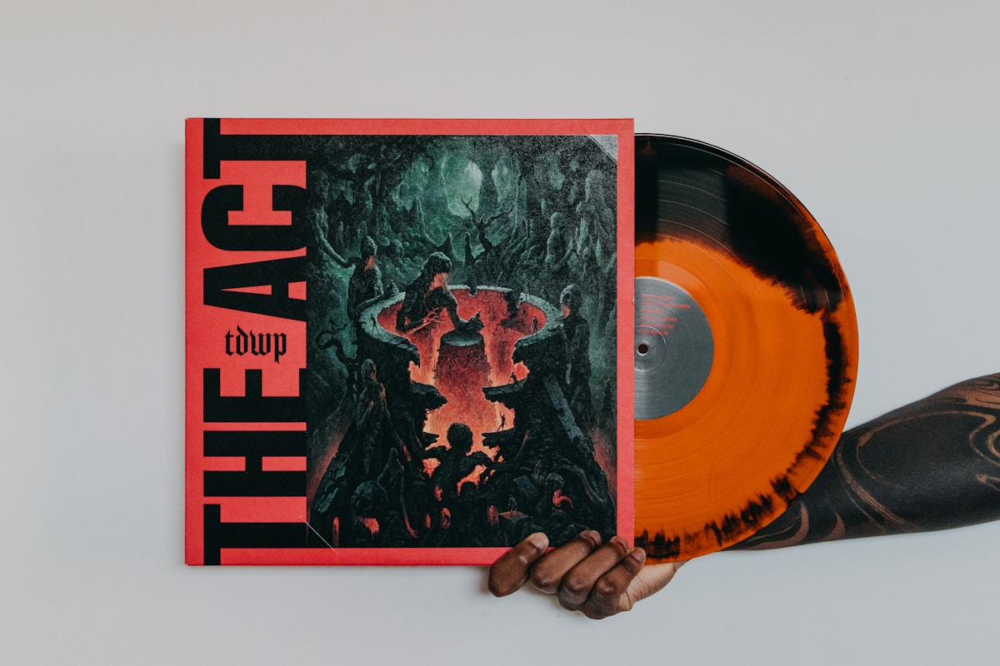
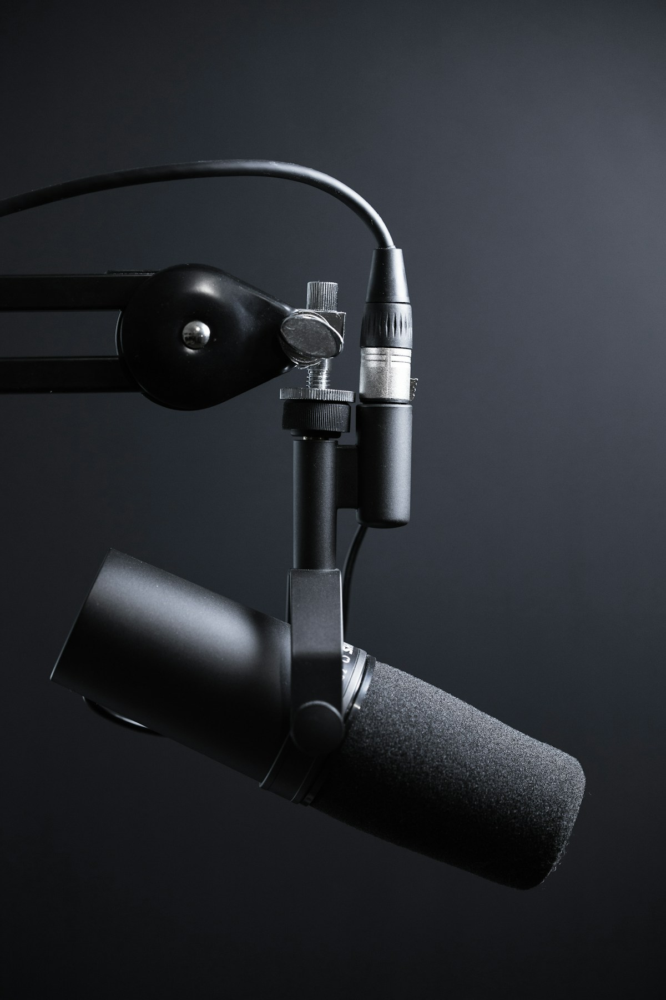
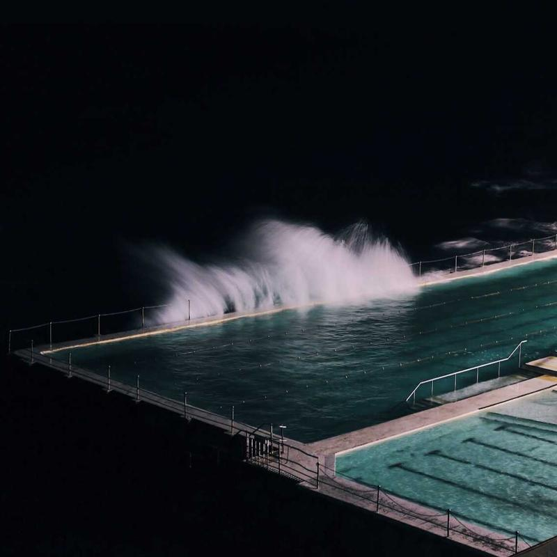
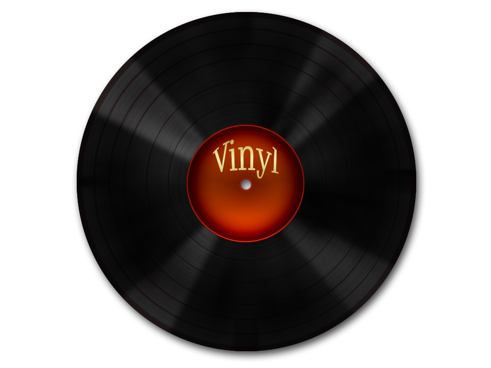
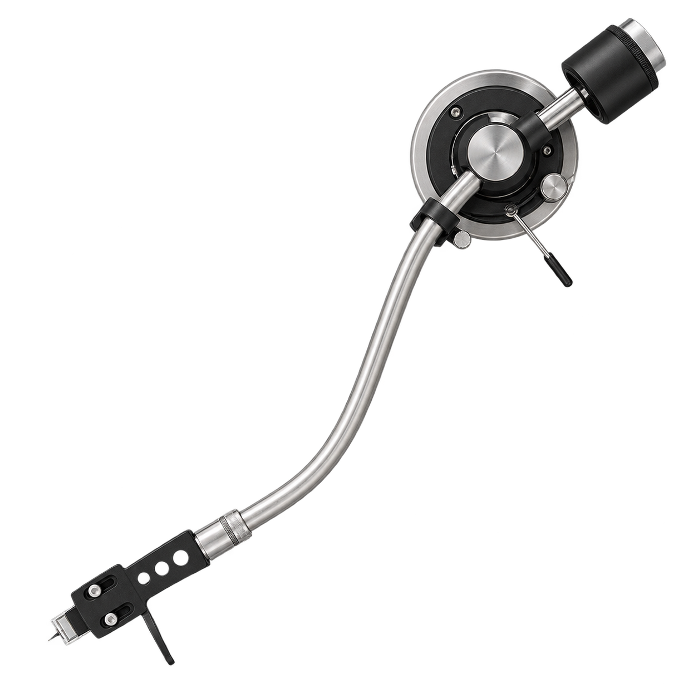
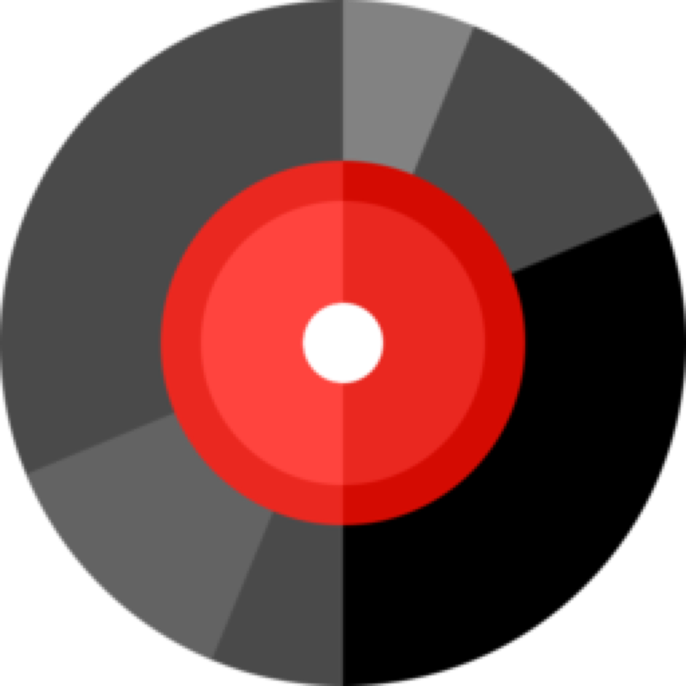

一天八种氛围，同一内容基底
所有渐变最终收口到 #121212，只改变页面顶端的时间气氛；品牌绿仍只承担主动作和状态。

独立热浪
播客精选Featured Activities
1 / 4为你推荐
查看全部
订阅的播客
查看全部推荐的播客
换一批关注的歌手
查看全部收藏的专辑
全部 12 张深夜循环
适合夜晚工作、阅读与散步的歌曲。让城市慢下来，也让思绪有地方停靠。


失重拥抱
Bbcsr · 关注

Scopify使用网易云音乐 App 扫码，在这台设备上继续。

可截图或使用系统分享，把二维码交给另一台设备扫描。Scopify Mobile 不提供手机号或密码登录。
使用网易云音乐 App 扫码，在这台设备上继续。
确认完成前会保持当前二维码状态，不需要再次扫描。
使用网易云音乐 App 扫码，在这台设备上继续。
旧二维码已停止接受登录确认，刷新不会影响本地音乐数据。
使用网易云音乐 App 扫码，在这台设备上继续。
登录凭据已安全保存在本设备，正在恢复收藏与播放现场。
使用网易云音乐 App 扫码，在这台设备上继续。
网络恢复后可继续当前登录流程，本地收藏与设置不会受到影响。
扫码过程的每一步
页面骨架保持稳定，只改变状态标识、辅助说明和恢复动作。
等待扫码二维码将在 01:42
后刷新进行中想听什么？
歌曲、歌手、专辑和播客，都从这里开始。
浏览全部
想听什么？
歌曲、歌手、专辑和播客，都从这里开始。
浏览全部
最佳匹配
歌曲
查看全部你的音乐空间
登录后同步收藏、歌单和关注内容。
无需登录也可以使用
常用工具
登录后同步收藏与记录
常用工具
睡眠定时
正在识别这段音乐
让手机靠近声源，我们只会在本地生成声纹，不保存原始录音。
发现新版本
更顺手的播放体验
当前版本 2.0.0 · 发布于 08 月 22 日
- 优化完整播放器的手势与视觉反馈
- 修复部分设备后台播放中断的问题
登录后收藏
把喜欢的音乐同步到你的账号，并在所有设备继续收听。
创建歌单
最近播放
按最近播放顺序收纳听过的歌曲，继续播放时从最上方开始。
Shuhe
在声音里保存生活的切片。
最近歌曲
查看全部最近歌单
2 个公开Neon Harbor
独立电子音乐人与夜行记录者。
公开歌单
查看全部保存失败时保留当前输入，并在页面顶部提示错误。
Bbcsr
在缓慢旋转的节拍中，写下城市边缘的失重感。
热门歌曲
查看全部专辑
全部 8 张循环边界
在电子节拍和城市夜色之间，记录一段不断返回原点的旅程。
城市夜航
在城市安静下来之后，听见夜班工作者、深夜电台与街道留下的声音。
最新节目
查看全部在回声抵达以前Before the echo reaches us
我们交换一次失重的拥抱We trade one weightless embrace
灯光沿着车窗后退The lights fall back along the window
夜色把方向轻轻藏好The night quietly hides the way
失重拥抱
Bbcsr · 关注
播放队列
共 12 首 · 可长按调整顺序应用偏好
Scopify
应用与显示
辅助体验
音质
播放
网络 安全连接
98 MB
缓存数据占用 · 总上限 320 MB
页面缓存 歌单、专辑、歌手与搜索
播放数据缓存 不包含音频文件
Scopify Mobile
2.0.0 · Build 240824 · Android
独立移动客户端与 Web 共用服务，但拥有自己的播放与设置。
应用信息
© 2026 Scopify contributors
暂时无法加载内容
服务没有响应。你的收藏、公开缓存和播放进度都不会丢失。
继续播放
查看全部为你推荐
刷新中断最近播放
查看全部为你推荐
查看全部登录状态已过期
账号数据已安全退出；公开内容和当前播放队列仍会保留。
失重拥抱
Bbcsr · 关注
副歌像凌晨回家的那一段路，安静，但并不孤单。
8 月 22 日 · 上海 · 回复戴耳机听的时候，能感觉声音从很远的地方慢慢靠近。
8 月 20 日 · 杭州 · 回复第二遍开始注意到背景里那条很轻的合成器，像车窗外掠过的灯。
8 月 19 日 · 北京 · 回复最后十秒没有急着结束，给整首歌留了一点呼吸。
8 月 18 日 · 成都 · 回复今晚的单曲循环。
8 月 17 日 · 南京 · 回复